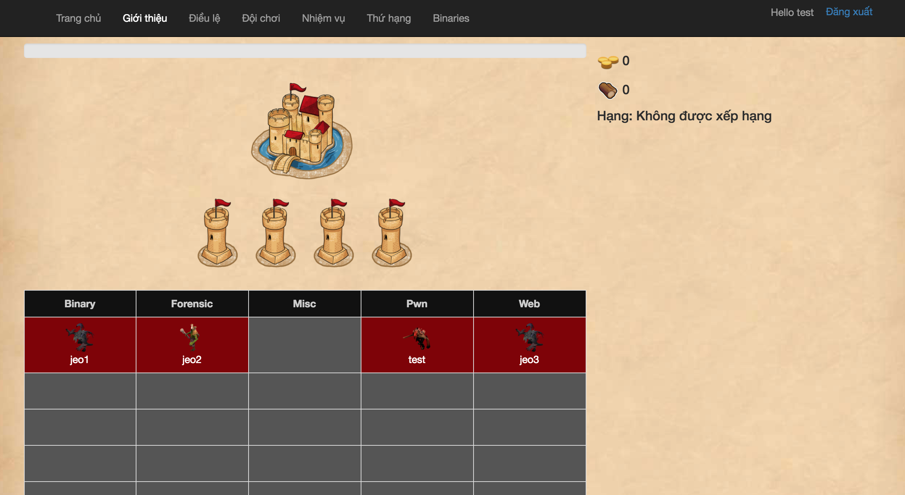
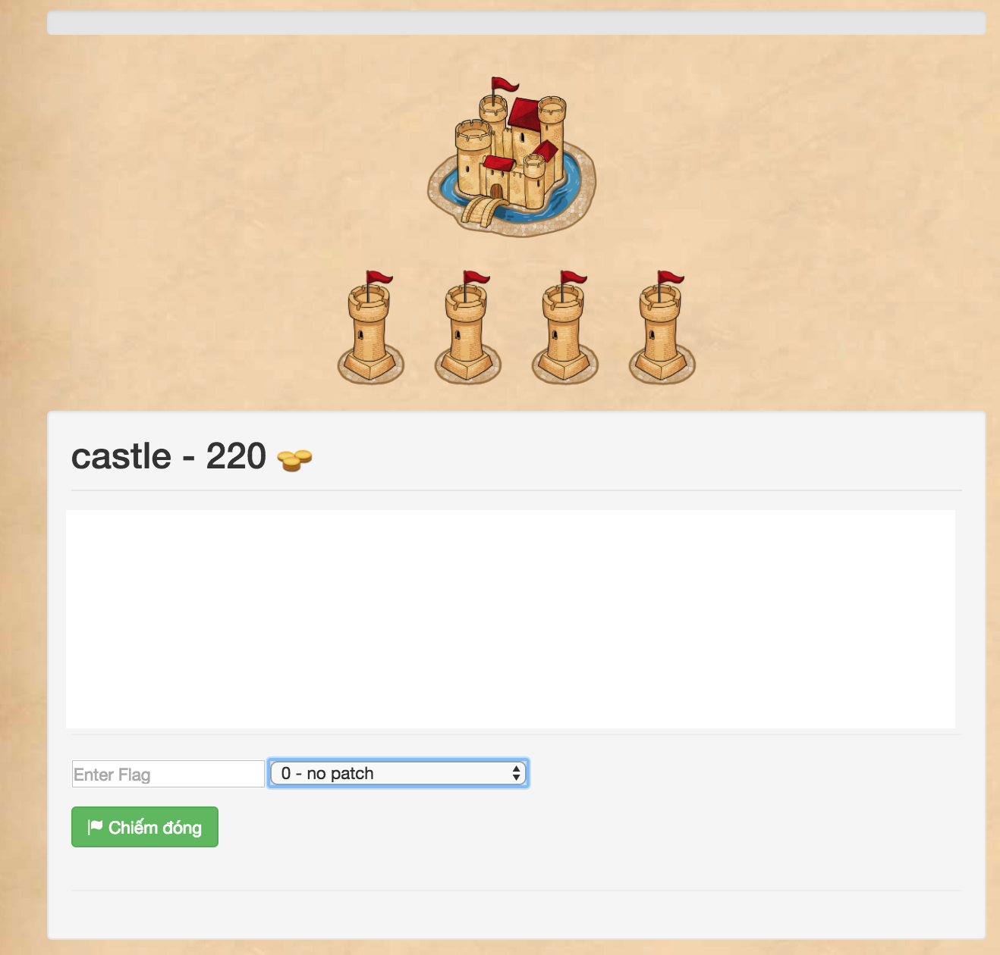
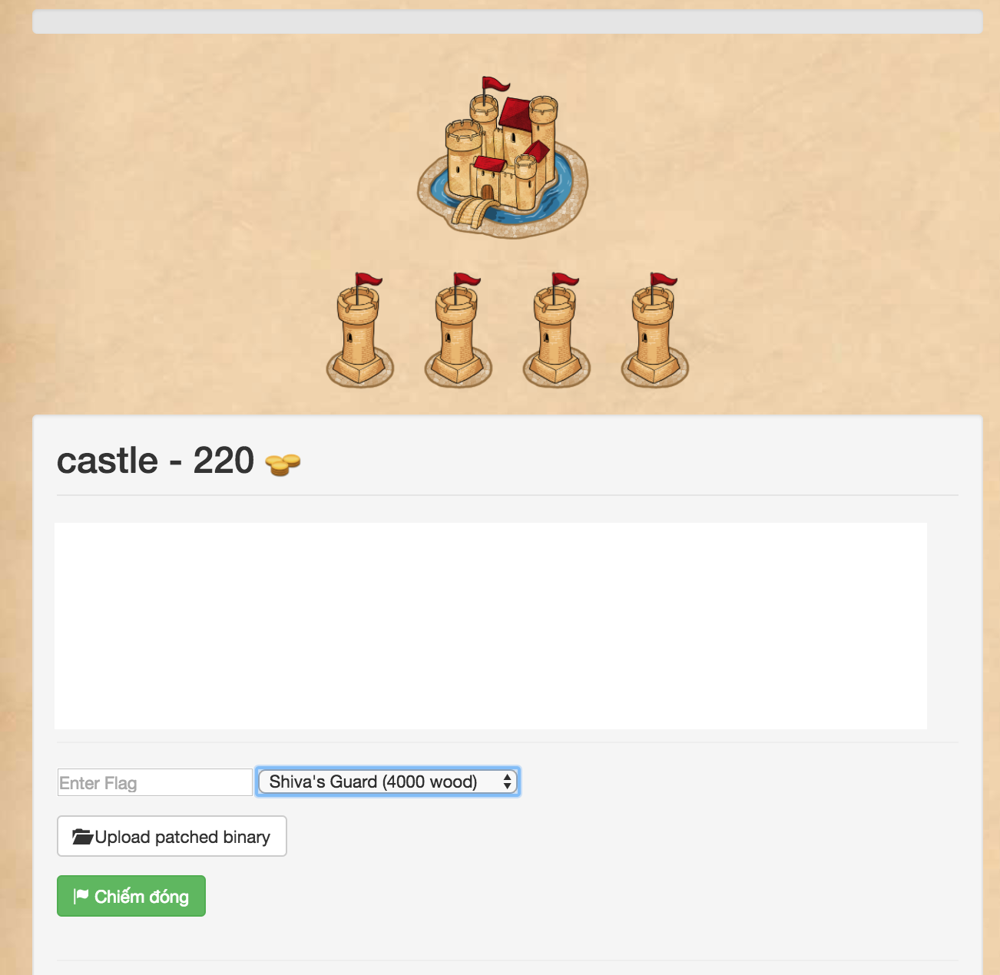
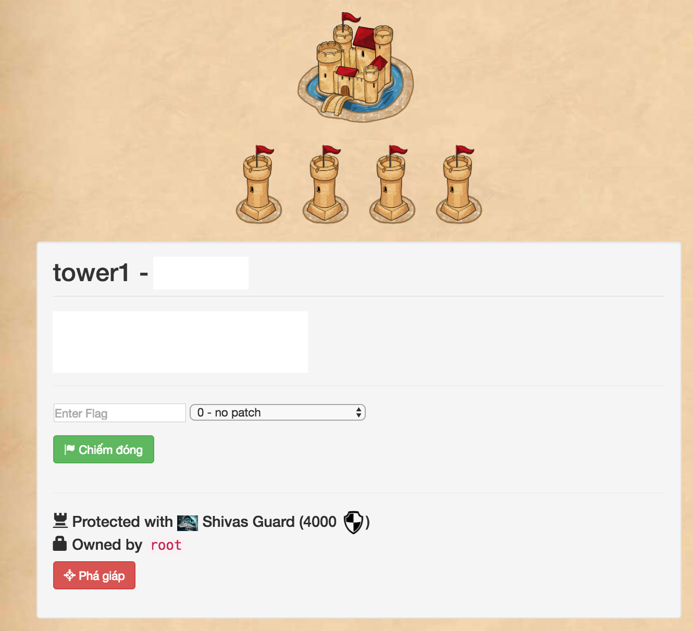

GUIDE
Hướng dẫn chung
Giao diện scoreboard final
- Tab 'Binaries' sẽ là đường dẫn đến folder chứa các binary/source-code đã và đang được chạy trên các căn cứ.
- Các căn cứ bao gồm: 1 lâu đài, 4 trụ. Khi người chơi click vào từng căn cứ sẽ được in ra chi tiết.
- Các challenge jeopardy bãi quái ở dưới chỉ minh họa, sẽ còn thay đổi.

Hướng dẫn sửa vá
Nếu người chơi đã có cờ và ra quyết định không patch (mặc định) sẽ không cần thiết upload bản vá của mình.
Số lượng tiền sinh ra trong 60s chiếm đóng cũng được hiển thị.
Flag của căn cứ vẫn ở định dạng SVATTT{...}

Nếu người chơi quyết định thực hiện sửa vá, sẽ phải chọn loại giáp mà muốn trang bị, đồng thời submit cờ và bản vá cùng một lúc, hệ thống chỉ ghi nhận thành công nếu cả cờ và bản vá đã vượt qua các phép thử.

Khi căn cứ đã bị chiếm đóng và đã có giáp, giao diện sẽ có chức năng Phá giáp, số lượng gỗ mà bạn cần để phá giáp tùy thuộc vào loại giáp cần được phá.
Sẽ không còn cooldown 20 phút dành cho vũ khí, bạn được quyền sử dụng thoải mái bất kì lúc nào.
